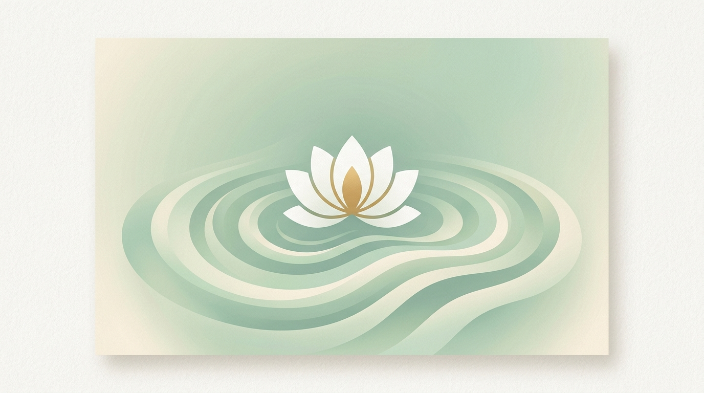

不以自律对抗沉迷，只以觉察夺回注意力。
不用意志力硬扛内耗，只用真实满足替换假性空虚。
短视频沉迷不是你的恶习，而是心理缺口的假性代偿。
不强制封锁、不批判自我、不安慰鸡汤。通过「认知重塑 ＋ 即时工具 ＋ 需求替换 ＋ 匿名沉淀」，帮助你从无意识消耗，变成有意识掌控。

💡 为什么传统「戒手机、硬抗自律」90% 都会失败？
市面上绝大多数产品要么靠强制封锁、制造自我焦虑（反弹极强），要么靠算法打卡内卷（用沉迷对抗沉迷）。
本站彻底拆解悖论： 你停不下短视频，不是贪恋内容，而是不敢面对空闲时的疲惫、焦虑与孤独。我们不劝你卸载，只带你看见真实的自己，拿回注意力的主权。
🔒 全站四大防悖论铁律
为彻底规避「用屏幕戒沉迷」的悖论，全站强制执行以下设计规范
🚫 去算法
无信息流、无无限下拉、无内容推荐、无热门推送，彻底离线化沉浸体验。
🚫 去攀比
无积分、无打卡排名、无勋章、无连续天数竞赛，拒绝制造二次焦虑。
📖 去碎片
主打静心长文、结构化练习、深度阅读，拒绝速食鸡汤与浮躁快餐。
💚 去焦虑
所有复发正常，所有沉迷皆是信号。全站文案温柔治愈、无说教、无 PUA。